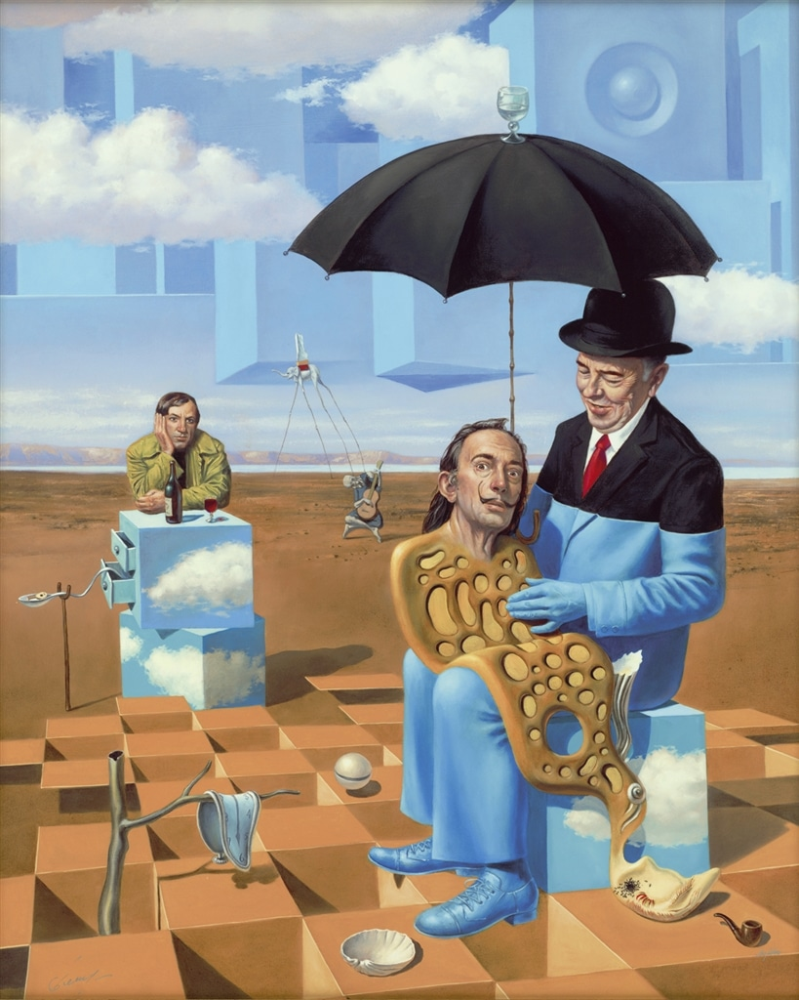
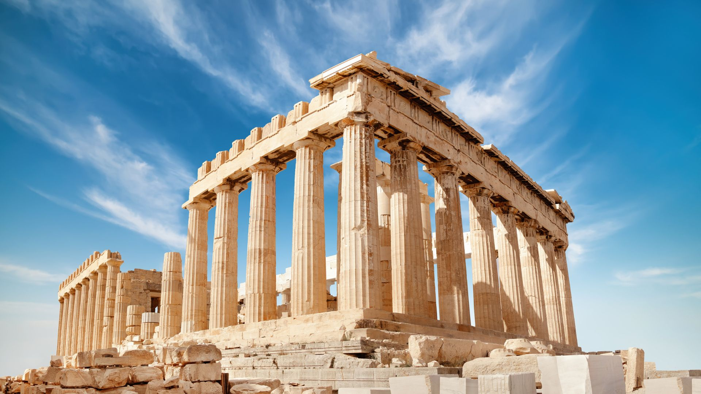
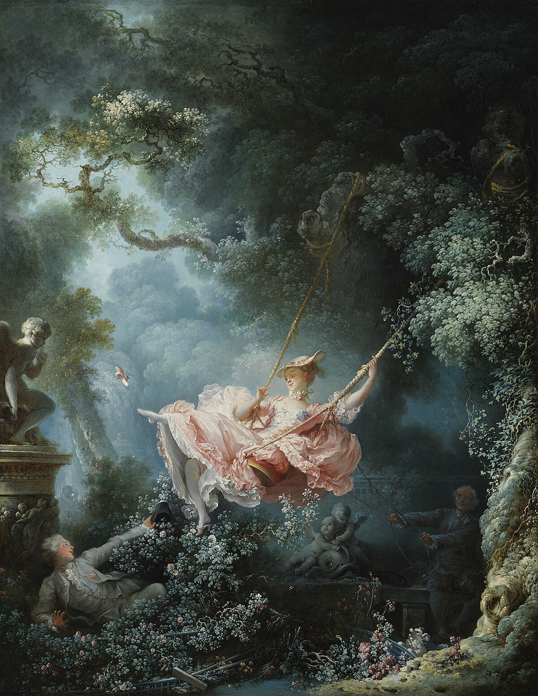

Test Your Art History Knowledge!
-
Question 1: Who painted the Mona Lisa?
- Leonardo da Vinci
- Vincent van Gogh
- Pablo Picasso

a) Leonardo da Vinci
-
Question 2: Which art movement is known for its dream-like imagery?
- Impressionism
- Surrealism
- Cubism
b) Surrealism
-
Question 3: Which of these structures is the most famous example of Ancient Greek architecture?
- The Colosseum
- The Parthenon
- The Pyramids of Giza
b) The Parthenon
-
Question 4: Which art movement is most closely associated with Claude Monet?
- Cubism
- Impressionism
- Surrealism

b) Impressionism
-
Question 5: Which famous painting was created by Sandro Botticelli?
- Mona Lisa
- The Birth of Venus
- Starry Night

b) The Birth of Venus
-
Question 6: Which characteristics are most often associated with the Rococo style?
- Monumentality and seriousness
- Lightness, playfulness, and ornamentation
- Realism and social critique
b) Lightness, playfulness, and ornamentation
Brief Overview of Art Eras
| Era | Period (approx.) | Key Characteristics |
|---|---|---|
| Ancient Greece | c. 8th century BCE - 1st century CE | Idealism, harmony, proportions |
| Renaissance | c. 14th - 16th century | Humanism, realism, perspective |
| Impressionism | c. 19th century | Emphasis on light and color, capturing fleeting moments |
| Contemporary Art | c. 20th century - present | Diversity of styles, experimentation, individuality |